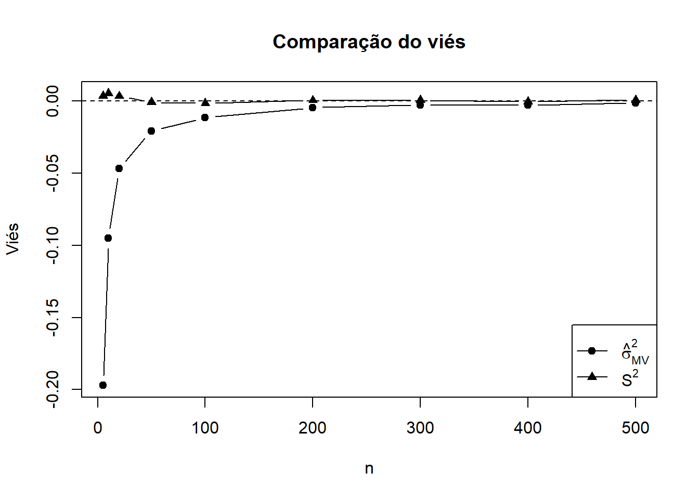
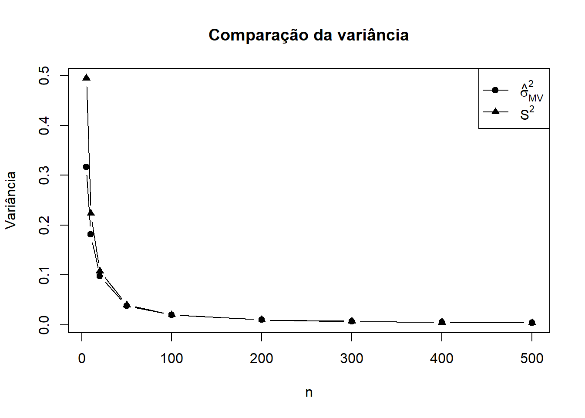
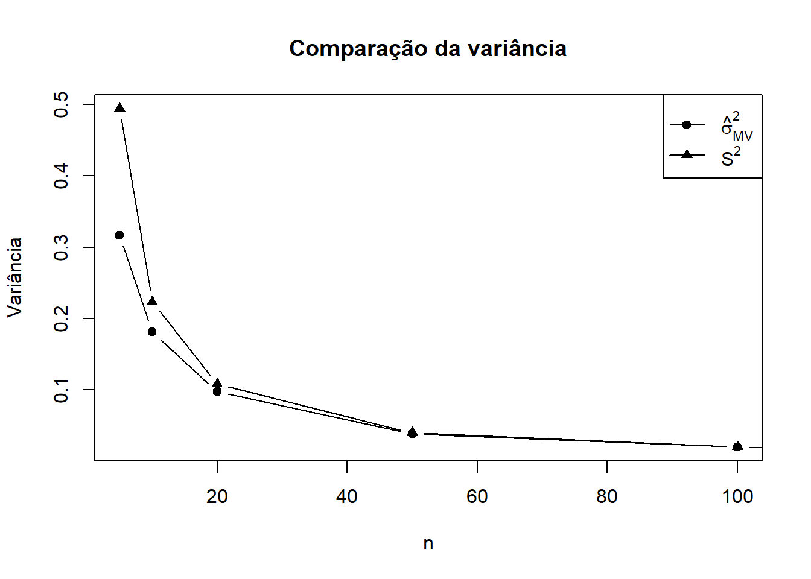
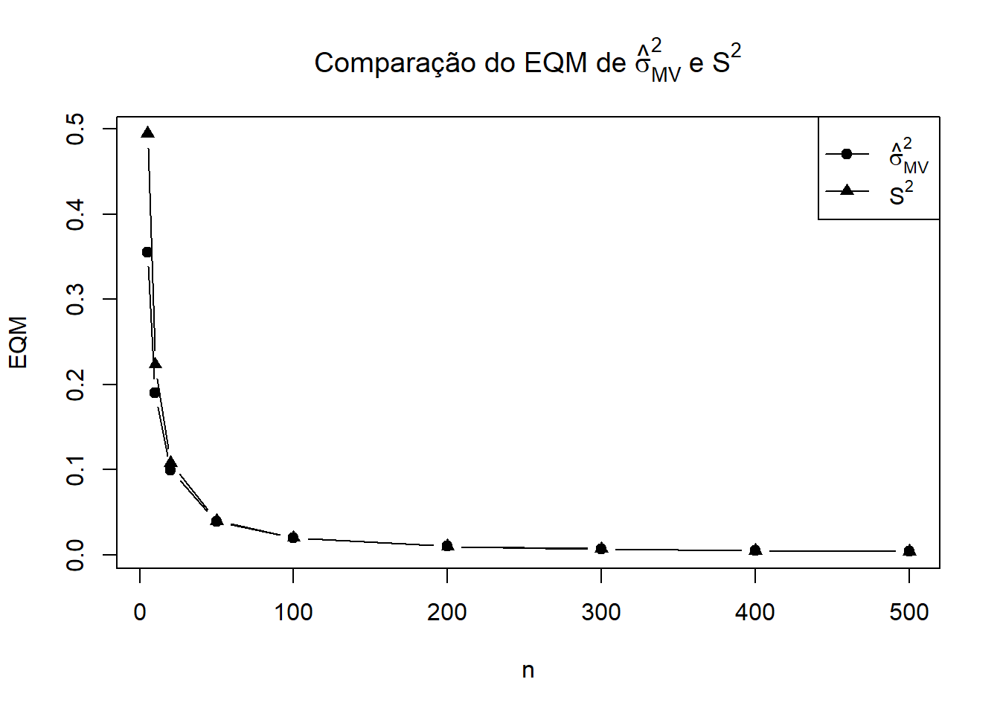
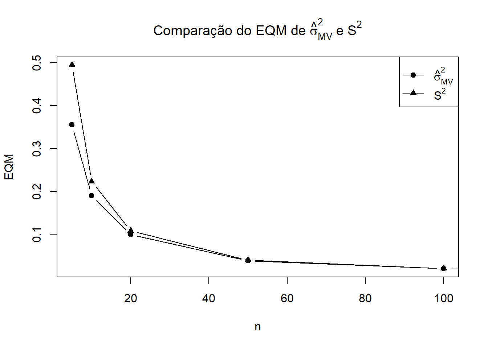

set.seed(123)
# Parâmetros
mu <- 0
sigma2 <- 1
sigma <- sqrt(sigma2)
# tamanhos amostrais
n_vals <- c(5, 10, 20, 50, 100,200,300,400,500)
B <- 10000
# matriz para guardar resultados
resultados <- data.frame(
n = integer(),
vies_MV = numeric(),
var_MV = numeric(),
eqm_MV = numeric(),
vies_S2 = numeric(),
var_S2 = numeric(),
eqm_S2 = numeric()
)
for (n in n_vals) {
est_mv <- numeric(B)
est_s2 <- numeric(B)
for (b in 1:B) {
x <- rnorm(n, mean = mu, sd = sigma)
# estimador de máxima verossimilhança
est_mv[b] <- mean((x - mean(x))^2)
# estimador com denominador n-1
est_s2[b] <- var(x)
}
# medidas empíricas
vies_mv <- mean(est_mv) - sigma2
var_mv <- var(est_mv)
eqm_mv <- mean((est_mv - sigma2)^2)
vies_s2 <- mean(est_s2) - sigma2
var_s2 <- var(est_s2)
eqm_s2 <- mean((est_s2 - sigma2)^2)
resultados <- rbind(resultados,
data.frame(
n = n,
vies_MV = vies_mv,
var_MV = var_mv,
eqm_MV = eqm_mv,
vies_S2 = vies_s2,
var_S2 = var_s2,
eqm_S2 = eqm_s2
))
}Est_Var_Normal
No ultimo relatório sobre estimadores de uma Bernoulli, onde nós avaliamos os estimadores pelo viês(que nos informa a acurácia) ,variância(que nos informa a precisão ) e Erro quadrático médio(que avalia a curacia e precisão ao mesmo tempo). Nesse relatório nós iremos avaliar estimadores para var4iância no contexto de uma população normal, os estimadores são \(\hat{\sigma^{2}}=\frac{\sum_{i=1}^{N} (x_i - \mu)^2}{N}\) e \(S^{2}=\frac{\sum_{i=1}^{n} (x_i - \bar{x})^2}{n - 1}\)
Avaliando os estimadores “númericamente”
resultados$vies_MV_teorico <- -1 / resultados$n
resultados$var_MV_teorica <- 2 * (resultados$n - 1) / resultados$n^2
resultados$eqm_MV_teorico <- (2 * resultados$n - 1) / resultados$n^2
resultados$vies_S2_teorico <- 0
resultados$var_S2_teorica <- 2 / (resultados$n - 1)
resultados$eqm_S2_teorico <- 2 / (resultados$n - 1)
print(resultados) n vies_MV var_MV eqm_MV vies_S2 var_S2
1 5 -0.197080609 0.316556968 0.355366079 0.0036492393 0.494620263
2 10 -0.095169552 0.181015236 0.190054378 0.0053671643 0.223475600
3 20 -0.046764225 0.097476818 0.099653963 0.0034060792 0.108007555
4 50 -0.020697683 0.038238892 0.038663462 -0.0007119212 0.039815589
5 100 -0.011517460 0.019540824 0.019671522 -0.0015327875 0.019937582
6 200 -0.004484453 0.009876328 0.009895450 0.0005181380 0.009975837
7 300 -0.002620577 0.006858970 0.006865152 0.0007151406 0.006904926
8 400 -0.002848612 0.004974925 0.004982542 -0.0003494854 0.004999893
9 500 -0.001182526 0.003948691 0.003949695 0.0008191125 0.003964534
eqm_S2 vies_MV_teorico var_MV_teorica eqm_MV_teorico vies_S2_teorico
1 0.494584118 -0.200000000 0.320000000 0.360000000 0
2 0.223482059 -0.100000000 0.180000000 0.190000000 0
3 0.108008355 -0.050000000 0.095000000 0.097500000 0
4 0.039812114 -0.020000000 0.039200000 0.039600000 0
5 0.019937938 -0.010000000 0.019800000 0.019900000 0
6 0.009975108 -0.005000000 0.009950000 0.009975000 0
7 0.006904747 -0.003333333 0.006644444 0.006655556 0
8 0.004999516 -0.002500000 0.004987500 0.004993750 0
9 0.003964808 -0.002000000 0.003992000 0.003996000 0
var_S2_teorica eqm_S2_teorico
1 0.500000000 0.500000000
2 0.222222222 0.222222222
3 0.105263158 0.105263158
4 0.040816327 0.040816327
5 0.020202020 0.020202020
6 0.010050251 0.010050251
7 0.006688963 0.006688963
8 0.005012531 0.005012531
9 0.004008016 0.004008016Avaliando com os gráficos
Viés
plot(resultados$n, resultados$vies_MV, type = "b", pch = 19,
ylim = range(c(resultados$vies_MV, resultados$vies_S2)),
xlab = "n", ylab = "Viés",
main = "Comparação do viés")
lines(resultados$n, resultados$vies_S2, type = "b", pch = 17)
abline(h = 0, lty = 2)
legend("bottomright",
legend = c(expression(hat(sigma)[MV]^2), expression(S^2)),
pch = c(19, 17), lty = 1)
Sabendo que o nosso desejo é que o estimador seja não viezado , note que \(S^{2}\) para qualquer valor de n , enquanto \(\hat{\sigma^{2}}\) é não viezado assintóticamente , ou seja , para valores n grandes .
Variância
plot(resultados$n, resultados$var_MV, type = "b", pch = 19,
ylim = range(c(resultados$var_MV, resultados$var_S2)),
xlab = "n", ylab = "Variância",
main = "Comparação da variância")
lines(resultados$n, resultados$var_S2, type = "b", pch = 17)
legend("topright",
legend = c(expression(hat(sigma)[MV]^2), expression(S^2)),
pch = c(19, 17), lty = 1)
Olhando o gráfico para n<=100 vemos uma diferença
plot(resultados$n[1:5], resultados$var_MV[1:5], type = "b", pch = 19,
ylim = range(c(resultados$var_MV[1:5], resultados$var_S2[1:5])),
xlab = "n", ylab = "Variância",
main = "Comparação da variância")
lines(resultados$n, resultados$var_S2, type = "b", pch = 17)
legend("topright",
legend = c(expression(hat(sigma)[MV]^2), expression(S^2)),
pch = c(19, 17), lty = 1)
Ambos são bem precisos mas notamos que a variância amostral é um pouco mais precisa .
Eqm
plot(resultados$n, resultados$eqm_MV, type = "b", pch = 19,
ylim = range(c(resultados$eqm_MV, resultados$eqm_S2)),
xlab = "n", ylab = "EQM",
main = expression("Comparação do EQM de " * hat(sigma)[MV]^2 * " e " * S^2))
lines(resultados$n, resultados$eqm_S2, type = "b", pch = 17)
legend("topright",
legend = c(expression(hat(sigma)[MV]^2), expression(S^2)),
pch = c(19, 17), lty = 1)
Vamos olha no intervalo de n entre(0,100) porque não vemos uma diferençã de comportamento estre os estimadores
plot(resultados$n[1:5], resultados$eqm_MV[1:5], type = "b", pch = 19,
ylim = range(c(resultados$eqm_MV[1:5], resultados$eqm_S2[1:5])),
xlab = "n", ylab = "EQM",
main = expression("Comparação do EQM de " * hat(sigma)[MV]^2 * " e " * S^2))
lines(resultados$n, resultados$eqm_S2, type = "b", pch = 17)
legend("topright",
legend = c(expression(hat(sigma)[MV]^2), expression(S^2)),
pch = c(19, 17), lty = 1)
Apesar de assintóticamnete eles comportarem de forma bem parecida , para valores que não são grande a melhor escolha seria o \(S^{2}\).